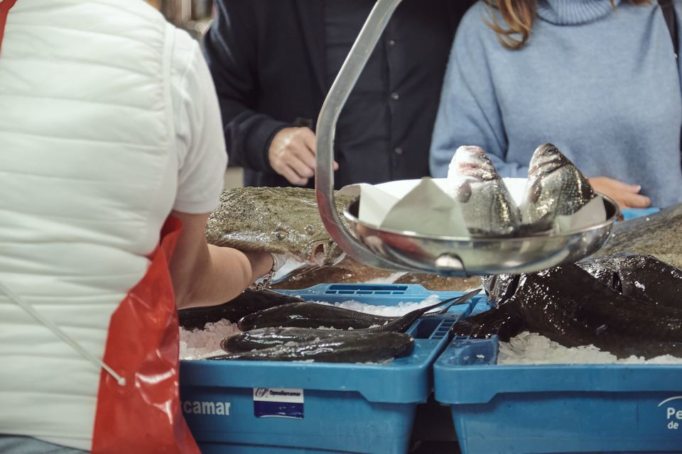

La revolución de la acuicultura española: alimentar al mundo, preservar los mares

¿Existe algún otro sector capaz de responder simultáneamente a dos de los mayores desafíos de la humanidad? La acuicultura se postula como una respuesta estratégica clave para garantizar alimentos a una población mundial en constante…
La producción de la pesca extractiva lleva estancada desde finales de los años ochenta, pero la demanda de alimentos acuáticos no ha dejado de crecer. ¿Cómo se puede seguir respondiendo a las necesidades de pescado en el mundo sin agotar los recursos del mar? La respuesta se llama acuicultura. Dos datos que dan una idea de la importancia del sector: hoy, el 51% de los animales y plantas acuáticos producidos en todo el planeta proceden de la acuicultura y, según la FAO, en 2034 esta aportará el 56% de todos los productos acuáticos de origen animal. En España, tenemos la suerte de contar con una acuicultura sostenible, pionera, con numerosos científicos de diversas especialidades trabajando…